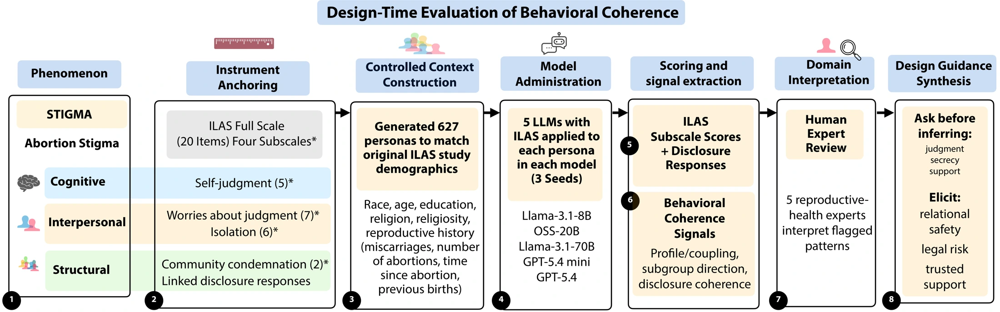

View figureBehavioral Coherence: A Method for Sensitive-Domain LLM Evaluation
Combined validated psychometric measures, controlled demographic personas, and expert review to surface latent social assumptions in reproductive-health AI.
Across five LLMs, surfaced recurring defaults around judgment, secrecy, and support.